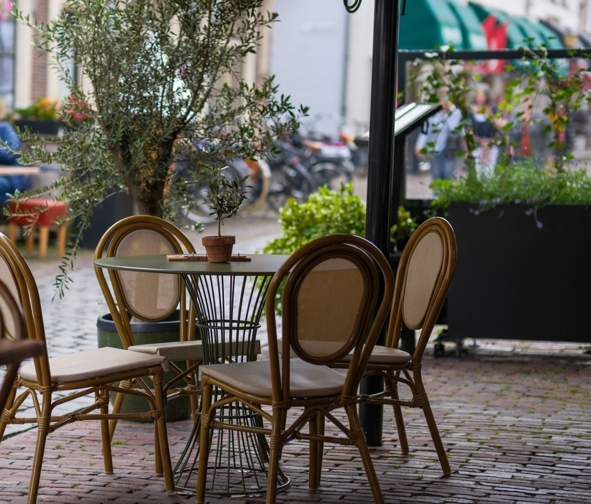
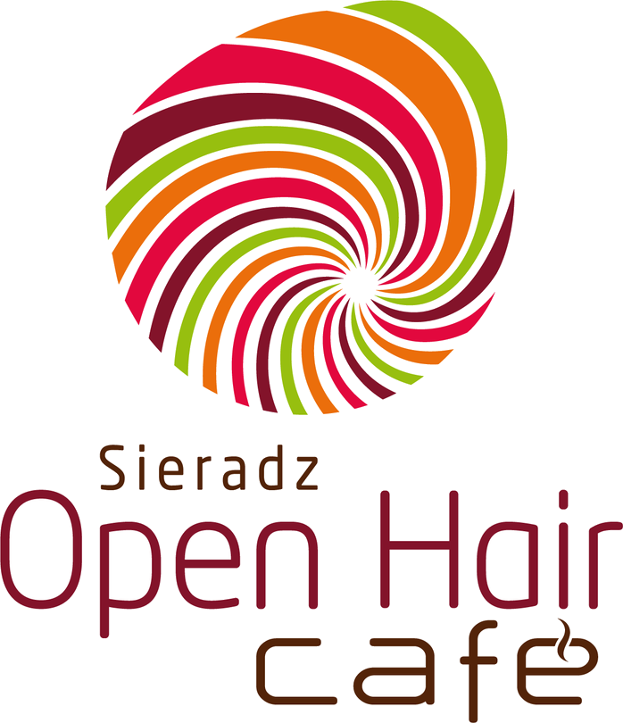

Open Hair Cafe

Kawiarnia w sercu sieradzkiego rynku

Open Hair Cafe stoi w oszklonym pawilonie na sieradzkim rynku - z każdego stolika widać, co się dzieje na płycie rynku. Liczy się u nas dobra kawa, świeże ciasto i to, że nikt nikogo nie pogania.
Kawę parzymy porządnie, ciasta mamy domowe, a stolik na zewnątrz czeka na ładną pogodę. Wpadnij na chwilę - zwykle zostaje się dłużej.
Poznaj nas →Kawałek naszej kawy, ciast i atmosfery, jaka panuje u nas przy stolikach. Najlepiej jednak przekonać się na miejscu, z filiżanką w dłoni.


Pon-czw 11:00-22:00, pt-sob 11:00-24:00, nd 11:00-22:00. Chcesz mieć pewność miejsca? Zadzwoń: +48 661 229 034.
Wpadnij na poranne espresso albo popołudniowe ciasto - czekamy w sercu sieradzkiego rynku.